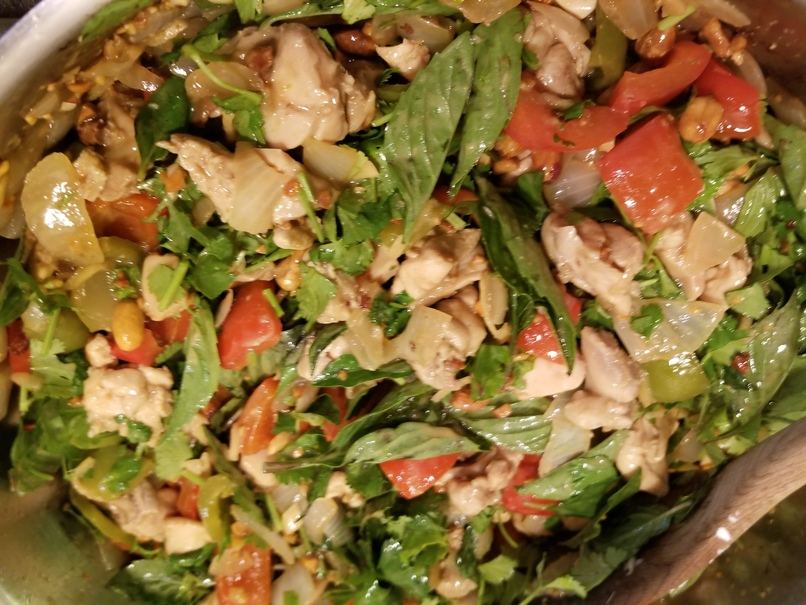

Peanut Chicken

Thai and Chinese Fusion Recipe
Savory, Sweet, and Spicy with a Refreshing Aftertaste from Thai Basil
Ingredients
- Blanched Peanuts ~2 cups
- Garlic ~5 cloves
- Ginger ~2 thumbs
- Doubanjian Chinese fermented Broad bean Paste, ~2 tablespoons
- Shaoxing Wine ~2 tablespoons
- Rice Vinegar ~1 tablespoon
- Thai Basil
- Bell Peppers 1 red 1 green
- Bird's Eye Chili ~1-3 depending on desired heat
- White Onions 2-3 onions, about 10oz
- Oyster Mushrooms
- Honey ~1 tablespoon
- Cilantro
- 6 Bone in Skin on Chicken Thighs
- Better than Bullion Chicken stock paste
- Optional: Tapioca starch to thicken if sauce is loose. ~1/2 teaspoon
Steps
- Roast peanuts in a convection oven at 350 degrees for 20 minutes.
- Mince Garlic, Bird's Eye Chilis, and Ginger. Set aside.
- Cut Onion and Bell Pepper into 2 centimeter pieces.
- Gently clean mushrooms.
- Rough chop Thai Basil and Cilantro.
- Once vegetable preparation is done, dry chicken Thighs and remove the skin. Turn the stove on low heat, and layer the chicken skins in the pan to reduce the fat.
- Remove the bones and cartilage from the chicken thighs and cut the chicken into 2 centimeter pieces
- Put the chicken into a separate bowl, and add the Ginger, Garlic, and Chili mix. Add the Doubanjian, Shaoxing Wine, Rice Vinegar, and Better than Bullion. Let it marinade while vegetables begin cooking.
- Remove the dry chicken skin from the pan before it burns. Render as much fat as you can, dark color is okay, burning or smoke is not.
- In the rendered fat, add the Onion and Bell Pepper. Turn up the heat to medium. Acquire some color on them, then add the chicken mix.
- Cook until the chicken is done.
- Roughly crush ~3/4 cup of Peanuts in a mortar and pestle and add them to the pan.
- Add small amounts of tapioca starch to thicken the sauce if it is too runny.
- Turn off the heat. Add the Cilantro and Thai Basil. Add honey to taste, usually ~1 tablespoon.
- Enjoy.
Return to Recipes